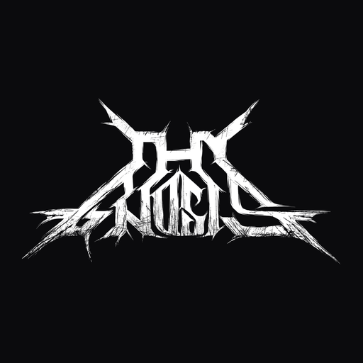
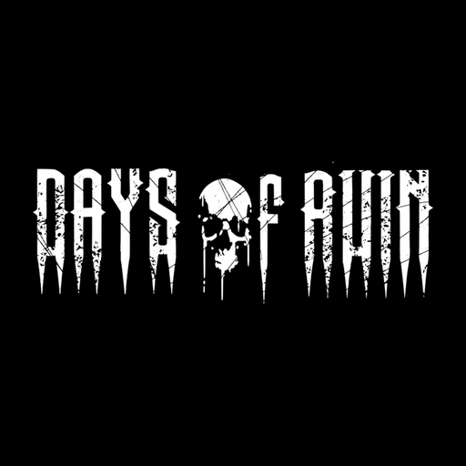

Band-Apps installieren
Direkt aufs iPhone, ohne TestFlight. Diese Seite in Safari öffnen.

Thy Gnosis
Konzerte, Alben, Player, Galerie

Days of Ruin
Shows, EP, Player, Fotos
- Auf «Installieren» tippen, dann im Hinweis von iOS nochmals auf «Installieren».
- Die App landet auf dem Home-Bildschirm und startet direkt. Kein Profil, kein Vertrauen-Dialog nötig.
- Falls nichts passiert: Seite in Safari öffnen, nicht in einer anderen App.
Signiert für Sebastians iPhone 17 Pro und Lynns iPhone 15 Pro Max. Auf anderen Geräten bricht die Installation ab. Neue Version? Einfach nochmals installieren, sie überschreibt die alte.